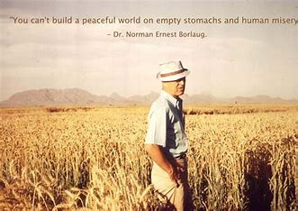

Dr. Norman Borlaug
The man who saved a billion lives

Dr. Norman Borlaug, third from the left, trains biologists in Mexico on how to increase wheat yields - part of his life-long war on hunger.
The man who saved a billion lives